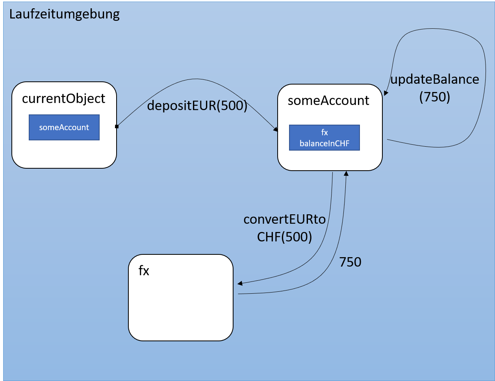

Objektorientiertes Design
Marcel Lüthi Departement Mathematik und Informatik
OO Design - Übersicht
- Teilt ein System in Module auf
- Module kapseln Daten und Funktionalität
- Objekte sind zur Laufzeit eindeutig identifiziert
- Können Nachrichten und Requests empfangen.
- Objekte können selbst wieder Objekte enthalten.
- Objektorientierter Code kann Polymorph sein.
- Implementation kann vererbt werden
OO Design und OO Programmiersprachen
OO Designs können, müssen aber nicht mit OO Sprachen umgesetzt werden.
- Mit OO Sprachen kann man Design direkt abbilden
- Nicht OO Sprachen verlangen etwas mehr Aufwand und Disziplin
- Beispiel OO Design in C: GTK+

Terminologie
- Klasse implementiert (ganz oder teilweise) Abstrakten Datentyp
- Falls Implementationen fehlen ist die Klasse abstrakt.
- Ein Konstruktor kreiert neue Instanzen
- Instanzvariablen sind Referenzen auf Objekte
- Die Laufzeitstruktur eines Systems bezeichnet die Menge der Objekte zur Laufzeit
- Jedes Objekt repräsentiert Daten und Methoden um diese Daten zu manipulieren.
Terminologie (2)
- Daten heissen Attribute
- Operationen heissen Methoden
- Ein Objekt kann mehrere Schnittstellen (Interfaces) anbieten
- Jede Schnittstelle erlaubt unterschiedlichen Zugriff auf Daten / Methoden
- Beispiel: Java's Array List unterstützt sowohl
RandomAccess als auchIterable interface.
Hilfreiche sichtweise auf Objekte
- Objekte verwalten Zustand der Daten (Attribute)
- Nehmen Nachrichten/Requests entgegen (Methoden)
- Senden Antwort zurück und/oder verändern Zustand
- Methodenaufruf = senden einer Nachricht
Beispiel: Methodenaufruf als Nachricht
class BankAccount {
private FxConverter fx = new FxConverter();
private double balanceInCHF;
void depositEur(double amount) {
double asCHF = b.convertEurToCHF(amount))
this.updateBalance(balanceInCHF += asCHF)
}
void updateBalance(double newBalance) {
balanceInCHF = newBalance;
}
}
// somewhere in currentObject
someAccount.depositEUR(500);

Komposition und Vererbung
- Vererbung: Eine neue Klasse erbt Implementation von Superklasse.
- Bricht Kapselung auf / verletzt Information Hiding
- Komposition: Neue Klassen werden aus anderen Klassen zusammengesetzt.

Komposition sollte wenn möglich bevorzugt werden. Vererbung nur von Interfaces.
Quiz: Probleme mit Vererbung
- Was passiert mit counter wenn addAll aufgerufen wird?
public class CountingList<T> extends ArrayList<T> {
private int counter = 0;
@Override
public void add(T elem) {
super.add(elem);
counter++;
}
@Override
public void addAll(Collection<T> other) {
super.addAll(other);
counter += other.size();
}
}
Lösung durch Komposition
public class CountingList<T> implements List<T> {
private final List<T> list = new ArrayList<T>();
private int counter = 0;
@Override
public void add(T elem) {
list.add(elem);
counter++;
}
@Override
public void addAll(Collection<T> other) {
list.addAll(other);
counter += other.size();
}
...
}
Polymorphismus und dynamische Bindung
- Dynamische Bindung: Variablen können zur Laufzeit an verschiedene (verwandte) Typen gebunden werden
- Polymorphismus: Zur Laufzeit wird Methode entsprechend dem Objekttyp verwendet.
Beispiel: Polymorphismus
interface Foo {
public void bar();
}
class FooImpl1 {
public void bar() { System.out.println("in FooImpl1"); }
}
class FooImpl2 {
public void bar() { System.out.println("in FooImpl2"); }
}
void doSomethingWithFoo(Foo foo) {
foo.bar();
}
var Foo foo = new FooImpl1();
doSomethingWithFoo(foo);
- Unterschiedliche Ausgabe je nachdem ob
foo anFooImpl1 oderFooImpl2 gebunden wird.
Unit Tests
- Nennen sie die wichtigsten Eigenschaften von OO Systemen?
- Was ist Polymorphismus und weshalb ist es wichtig?
- Erklären sie wie Objekte "kommunizieren"
- Was ist das Problem von Vererbung
- Weshalb sollte Komposition bevorzugt werden?